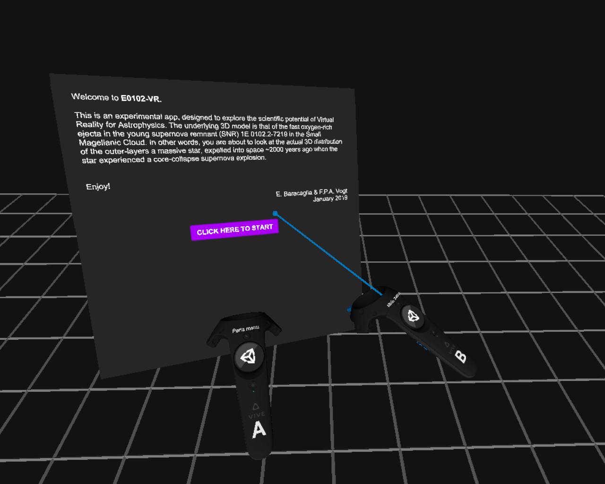
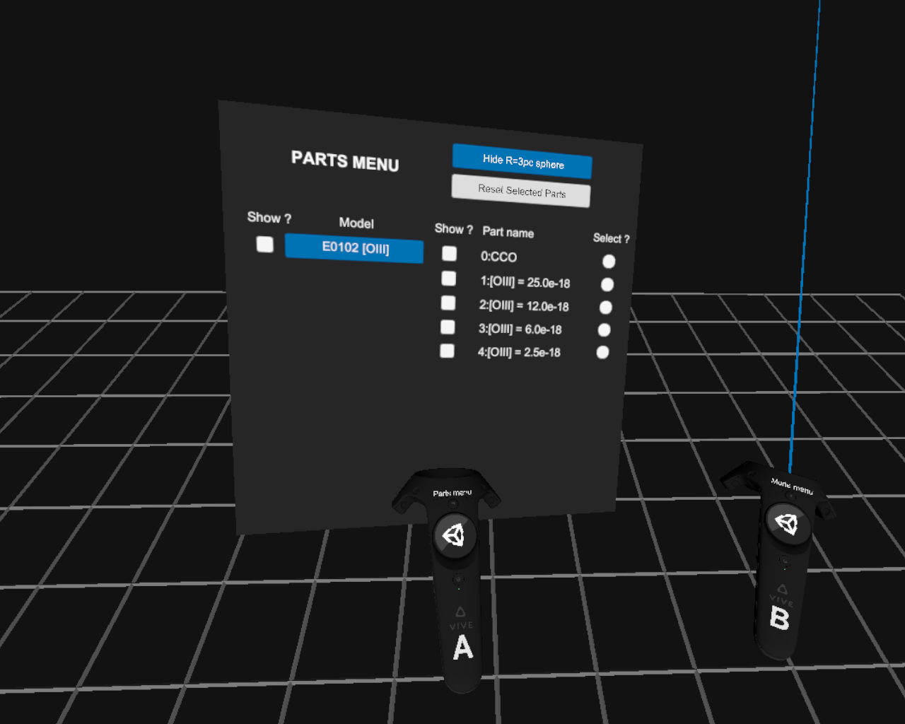

Upon launching E0102-VR, you must enable the 3D model. To do so, point the laser beam to the purple button that reads "Click here to start", and pull the trigger of the handle "B".

Once the model has loaded, the "parts menu", attached to the controller A,
lists the 5 different subparts of the model: 4 iso-contours of distinct oxygen-emission
intensities, and the location of the Central Compact Object.
From the part model (using the laser beam and trigger button from the controller B),
each model part can be shown or hidden using the ticks under the "Show?" columns.
By touching model parts with the yellow pointer attached to the controller B,
the user can drag individual model parts around. To place them back in their
original position, the part must first be "selected" (by clicking the appropriate
white disk in the eponym column of the parts menu) prior to clicking the
"Reset selected parts" button.
